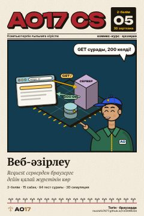

AO17 CS курсы / 2-бөлім: 3D зертхана / Веб-әзірлеу

Веб-әзірлеу · 4-сабақ · ≈15 мин · 4 қадам · 8 сұрақ
JavaScript: оқиғалар циклі
JavaScript
Call stack, Web API, microtask және task кезектері: JavaScript бір ағында қалай «көп іс» істейді.
1Call stack
Идея
JavaScript: бір ағынды (single-threaded): бір уақытта бір ғана код орындалады. Орындалып жатқан функциялар call stack-та тұрады: шақырылған функция үстіне қойылады, аяқталғанда алынады (LIFO: соңғы кірген бірінші шығады).
Ұзақ әрекеттер (таймер, желі) стекті бөгемейді: олар браузерге (Web API) беріледі. Дайын болғанда олардың callback-і кезекке түседі.
Үш кезек түрі
- call stack: қазір орындалып жатқан;
- microtask кезегі: Promise.then callback-тері;
- task (macrotask) кезегі: setTimeout, оқиғалар, fetch-тің жауабы.
Event loop ережесі
while (true):
стек бос па? →
барлық microtask-ты орында
бір task-ты алып орында💡 Түйін: «асинхронды» = «кейінірек, стек босағанда». Параллель емес!
Енді сен
«setTimeout(0) vs Promise» бағдарламасын соңына дейін қадамдап орында. Әр қадамда стек пен кезектерге қара.
Өзіңді тексер
JavaScript бір уақытта неше функцияны орындай алады (бір ағында)?
Жауабы мен түсіндірмесі
Дұрыс жауап: Бір
Бір call stack: бір уақытта бір орындалу. Асинхрондылық кезектер арқылы жасалады.
Call stack қандай принциппен жұмыс істейді?
Жауабы мен түсіндірмесі
Дұрыс жауап: LIFO: соңғы кірген бірінші шығады
Ішкі шақыру аяқталмай, сыртқысы аяқтала алмайды: бұл LIFO.
2Нәтижені болжа
Идея
Бағдарламаны оқып, нәтижесін болжау : бағдарламалаудың басты дағдысы. Ереже:
- Барлық синхронды код бірінші.
- Стек босағанда: барлық microtask (Promise).
- Сосын бір task (setTimeout), тағы microtask-тар, тағы бір task...
Есептеп көрейік
console.log("A");
setTimeout(() => console.log("B"), 0);
Promise.resolve().then(() => console.log("C"));
console.log("D");- «A»: синхронды.
- setTimeout → Web API → дайын → task кезегі: [B].
- Promise.then → microtask кезегі: [C].
- «D»: синхронды.
- Стек бос → microtask: «C».
- Task: «B».
Нәтиже: A D C B.
⚠ Жиі қате: «setTimeout(…, 0): бірден орындалады». Жоқ: 0 мс: «ең ерте дегенде», және тек стек пен microtask-тар босағаннан кейін.
Тереңірек: event loop алгоритмі дәл
1. Скриптті соңына дейін орында (стек бос болғанша)
2. Microtask кезегін ТОЛЫҚ босат (жаңа microtask-тар да кезекке қосылады)
3. Қажет болса: экранды сал (render)
4. Macrotask кезегінен БІР тапсырма ал, орында → 2-қадамғаМысал:
console.log("A");
setTimeout(() => console.log("B"), 0);
Promise.resolve().then(() => {
console.log("C");
Promise.resolve().then(() => console.log("D"));
});
console.log("E");Нәтиже: A E C D B. A мен E: синхронды. C: microtask. D: C ішінде қосылған microtask, бірақ кезек толық босатылатындықтан B-дан бұрын. B: macrotask, ең соңында.
Салдары: шексіз microtask (then ішінде өзін қайта шақыру) экранды мүлдем салдырмайды: бет қатып қалады. Ал шексіз setTimeout қатырмайды: әр macrotask арасында render мүмкіндігі бар.
setTimeout(f, 0): «кемінде 0 мс», «дәл 0 мс» емес. Браузерлер 5 деңгейден терең кірістірілген таймерлерге кемінде ~4 мс қояды.
Енді сен
Консольге шығатын ретті батырмалармен құрастыр.
Өзіңді тексер
console.log(1); setTimeout(() => console.log(2)); Promise.resolve().then(() => console.log(3));: нәтиже?
Жауабы мен түсіндірмесі
Дұрыс жауап: 1 3 2
Синхронды 1, сосын microtask 3, сосын task 2.
setTimeout(fn, 0) қашан орындалады?
Жауабы мен түсіндірмесі
Дұрыс жауап: Ағымдағы код пен барлық microtask-тардан кейін
Task кезегіндегі callback стек бос және microtask кезегі бос болғанда ғана алынады.
3Таймерлер
Идея
Таймерлер кодтағы ретпен емес, мерзімі бойынша дайын болады. Web API әр таймерді өзі санайды; уақыты біткен callback task кезегіне түседі.
Есептеп көрейік
setTimeout(() => console.log("1"), 100);
setTimeout(() => console.log("2"), 10);
console.log("3");- 0 мс: «3» (синхронды).
- 10 мс: екінші таймер дайын → «2».
- 100 мс: бірінші таймер дайын → «1».
Нәтиже: 3 2 1.
Нақты әлемде
setTimeout-тың уақыты: минимум, кепілдік емес. Стек ұзақ есептеумен бос болмаса, таймер кешігеді. Сондықтан ойындар мен анимация requestAnimationFrame және delta time қолданады (Game LAB, 3-сабақ).
💡 Түйін: асинхронды кодта «кодта бірінші жазылған» ≠ «бірінші орындалатын».
Енді сен
«Екі таймер» бағдарламасының нәтижесін болжа.
Өзіңді тексер
setTimeout(A, 50); setTimeout(B, 20); setTimeout(C, 50);: қандай ретпен?
Жауабы мен түсіндірмесі
Дұрыс жауап: B A C
B (20 мс) бірінші. A мен C-ның мерзімі бірдей: тіркелген реті бойынша A, сосын C.
Стекте 200 мс бойы ауыр есептеу жүрсе, setTimeout(fn, 10) қашан орындалады?
Жауабы мен түсіндірмесі
Дұрыс жауап: Кемінде 200 мс-тан кейін, стек босағанда
Таймер дайын болса да, callback стек босағанша күтеді.
4fetch және Promise
Идея
fetch: желіден деректерді сұрау. Ол бірден Promise қайтарады; жауап келгенде Promise орындалады. Бұл: веб-қосымшалардың негізі: бет «қатып қалмайды», жауап күтіп тұрғанда пайдаланушы басуды, жазуды жалғастырады.
Есептеп көрейік
console.log("бастау");
fetch("/api/user").then(() => {
console.log("жауап келді");
Promise.resolve().then(() => console.log("өңделді"));
});
setTimeout(() => console.log("таймер"), 0);
console.log("соңы");- синхронды: «бастау», «соңы»;
- 0 мс: таймер дайын → «таймер»;
- 120 мс: желі жауабы → «жауап келді», оның ішіндегі Promise бірден → «өңделді».
Нәтиже: бастау, соңы, таймер, жауап келді, өңделді.
async/await
Заманауи JS-те:
const res = await fetch("/api/user");Бұл да Promise, тек оқуға оңай. await функцияны «тоқтатады», бірақ стекті бөгемейді.
⚠ Жиі қате: fetch-тің нәтижесін келесі жолда бірден қолдануға тырысу. Нәтиже: болашақта; оны then немесе await арқылы күт.
Енді сен
Бағдарламаны соңына дейін орында және ретін дұрыс болжа.
Өзіңді тексер
fetch(...) шақырылғанда бірден не қайтарады?
Жауабы мен түсіндірмесі
Дұрыс жауап: Promise: болашақтағы жауапқа уәде
Желі уақыт алады; fetch бірден Promise береді, ол жауап келгенде орындалады.
Task callback-інің ішінде Promise.then тіркелсе, ол қашан орындалады?
Жауабы мен түсіндірмесі
Дұрыс жауап: Сол task аяқталғаннан кейін бірден, келесі task-тан бұрын
Әр task-тан кейін event loop барлық microtask кезегін босатады.
Сабақ AO17 командасының INSIDE TECH 3D платформасынан алынған: дәріс, тест және 3D симуляция - бір сабақтың бөліктері. Симуляция осы сайттың ішінде ашылады, прогресі «Менің шаңырағым» бетіне қосылады.